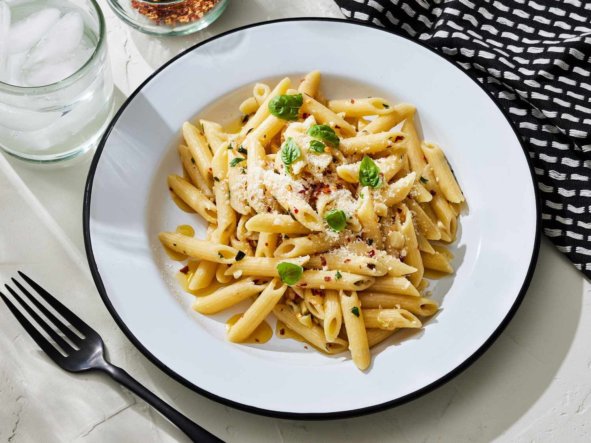

Pasta

Italian Pasta
These buttered noodles are simple and quick. Pasta is tossed with butter, parsley, and Parmesan cheese. A wonderful recipe to make when you don't feel like making a trip to the grocery store. I used what I had on hand and it worked like a charm.
Ingredients
- 1 (8 ounce) package dry spaghetti
- 8 tablespoons butter
- 2 tablespoons minced garlic
- 1 tablespoon chopped fresh parsley
- salt and freshly ground black pepper to taste
- 1 pinch cayenne pepper, or to taste (optional)
- 1 cup grated Parmesan cheese
Steps
- Gather all ingredients.
- Bring a large pot of lightly salted water to a boil. Cook pasta until al dente, 8 to 10 minutes; drain.
- Meanwhile, heat a skillet over medium-low heat. Melt butter with garlic very slowly to avoid burning the garlic. Season with parsley, salt, black pepper, and cayenne.
- Add cooked pasta to the skillet and toss until well coated with butter. Increase the heat to medium and cook until pasta is heated through and has absorbed some of the butter. Adjust seasonings if necessary.
- Serve with grated Parmesan cheese.
Home